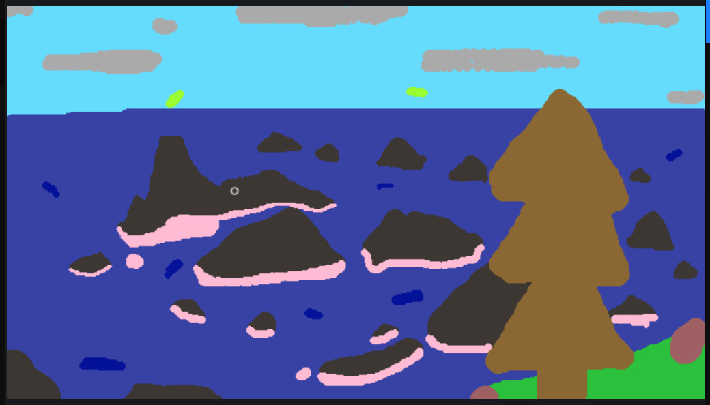

This was a test run using spade coco. I was trying to understand how the ai would draw certain items based on their original shape and perpective.
This is my attempt at recreating the hundred islands from the Philippines. The AI did fairly well even adding atmospheric perspective on some images, but not perfectly as boats and planes stand out. Overall the AI did better than I expected by working with perspective.
This series was to see how my favorite digital illustrator Ross Tran's work would look like created in the style of Nicholas Roerich. What's interesting is that Roerich was interested in "spiritual practices" and in Ross' art work, he often draws these mythical and spiritual-like beings which I thought Roerich would be interested in. Roerich was also fond of painting mountains and I used similar scenes from Ross to further link the two.